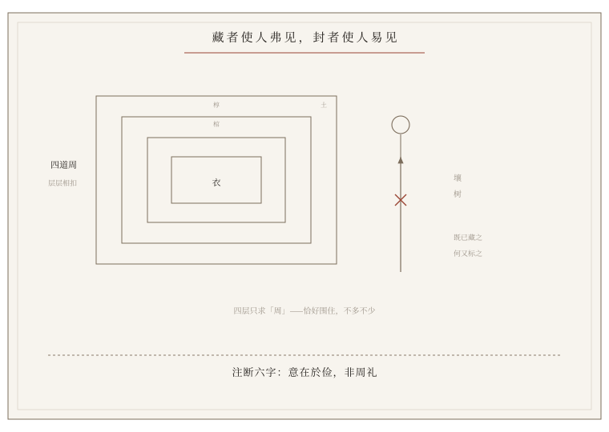

檀弓上 · 三·九十六 · 第 299 课
国子高曰：「葬也者，藏也。藏也者，欲人之弗得见也。是故衣足以饰身，棺周于衣，椁周于棺，土周于椁。反壤树之哉！」
说什么事：国子高说：葬，就是藏。藏的意思，是要人看不见。所以衣足够遮身，棺足够围住衣，椁足够围住棺，土足够围住椁。——如此，何必反过来堆土为坟、种树作标呢。
落在哪一层：藏之义。论「封树非古」。
为何编在此位：上一课孔子许客以死殡，是待人之宽；此课国子高斥封树，是待己之严。前课成子高择不食之地，此课国子高言藏之旨，同一人，先其行，后其论。
【经】國子高曰：「葬也者，藏也。藏也者，欲人之弗得見也。是故衣足以飾身，棺周於衣，椁周於棺，土周於椁。反壤樹之哉！」
【注】言皆所以為深邃，難人發見之也。國子高，成子高也。成，謚也。反，覆也。怪不如大古也，而反封樹之。意在於儉，非周禮。
【疏】此一节论重古非今之事。子高之意，人死可恶，故备以衣衾棺椁，欲其深邃，不使人知；今乃反更封壤为坟，而种树以标之哉，言不可封壤种树也。国子意在俭，非周礼之法。注「怪不」至「周礼」：唐虞以上谓之大古，《易·系辞》云「古之葬者，厚衣之以薪，不封不树」；今既封树，故云「怪不如大古也」。
国子高 注「成子高也」，即上一课之成子高，齐大夫。
藏 掩藏、埋藏。葬字之义即取于此。
弗得见 使人看不见。见，读如字。
衣足以饰身 衣只求遮住身体。足，够；饰，遮饰。
棺周于衣 棺恰好围住衣。周，环绕、围合。
椁周于棺 椁恰好围住棺。椁，外棺。
土周于椁 土恰好围住椁。
反 注「覆也」。反，反而、反过来。
壤 此用作动词，堆土为坟。
树 种树，以为标识。
国子高说：「葬，就是藏。藏，是要人看不见。所以衣只要够遮住身体，棺只要围住衣，椁只要围住棺，土只要围住椁。——既然如此，又何必反过来堆土成坟、种树作标呢！」
此节的骨架是四道「周」。
衣饰身，棺周衣，椁周棺，土周椁——一层包一层，层层相扣，每一层只求「周」，不求「厚」。这个「周」字用得极准：周是恰好围住，不多不少。多一层则费，少一层则露。
四层扣完，人就不见了。藏的目的达成，止。
于是末句一转：「反壤树之哉！」——既然藏好了，为什么又把它标出来？封土为坟，是把它举高；种树为标识，是给它指路。藏是使人弗得见，封树是使人易得见。这两件事在同一次丧事里做，前后自相抵牾。
注说「意在於俭，非周礼」——六个字断得极干脆。国子高所据者是大古之制（《易·系辞》「不封不树」），非周礼。周礼有封有树，有爵等之封（《周礼·冢人》「以爵等为丘封之度与其树数」）。所以国子高的话，是「重古非今」，是「怪不如大古」。
疏把这个分寸也点清了：国子高意在俭，非周礼之法。礼家记此语，不是要人照办，是存一说。
第一层 「周」字里的度量 四道「周」，构成一条严格的逻辑链：每一层只需包住里面那一层，不需更多。这就是「俭」的几何表达——不是省，是不多。多者，超出「周」的部分；俭者，恰好。
第二层 藏与标识的矛盾 封树的功能是标识：标高其处，种树记之，使后人可寻。而葬的本义是藏：使人弗得见。二者在同一件事上，方向相反。国子高抓到的是这个矛盾，不是「封树太费」。
礼的发展，往往是把矛盾留在一处：既藏之，又标之。标是为了祭，祭是为了不忘。国子高只取藏，不要标——这是把礼的链条砍在中间，故注断为「非周礼」。
第三层 「大古」的位置 注引《易·系辞》「古之葬者，厚衣之以薪，不封不树」。这是把国子高的依据安放在「大古」——唐虞以上。礼家论制，有三世：大古、三王、当今。称大古者，常含「质」之意。但称大古不等于复古，礼家记之，多是借古以砭今，非真要人回到薪葬。
第四层 一个人两节课 上一课成子高在病中说「择不食之地」，此课国子高在论中说「反壤树之哉」。一实践、一议论，同一个人。编者连排，是要人看见：他的俭不是一时之言，是临死与平居一贯的择。第 296 课的「不食之地」是地，此课的「藏」是理；地有限，理无限，二者原本是一件事。
与今日何干 今日之葬，封与树的规模远过古人：碑、栏、台、道。国子高那句「反壤树之哉」，问的仍是那句：你既说这是藏，为何又要它被看见。今日的答案多半是「为了后人祭扫」——这是礼的正当理由，但正当的理由，也该知道自己是在与「藏」相抵。
| 左 | 右 |
|---|---|
| 葬也者，藏也 | 定义 |
| 欲人之弗得见 | 目的 |
| 衣足以饰身 | 一·周 |
| 棺周于衣 | 二·周 |
| 椁周于棺 | 三·周 |
| 土周于椁 | 四·周 |
| 反壤树之哉 | 所斥 |
| 非周礼 | 注之断 |
画一处墓地剖面，视点正对剖面略俯。地下齐平处并排画四个同心矩形，由外而内：最外一层为土（填以细点），第二层为椁（厚木色边框），第三层为棺（较薄木色边框），最内为一具人形轮廓（只画衣形，不画面）。地面之上，剖面右端另起一小丘（土堆）与一株小树，与左侧平整的地面形成对照。不写文字、不画人面细节。赭色只用在最内那层衣形的边缘，与地面上那株小树的树干。
